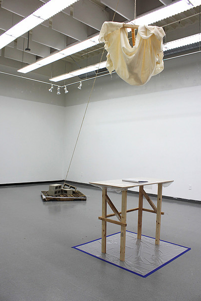
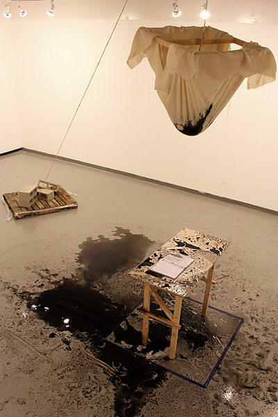
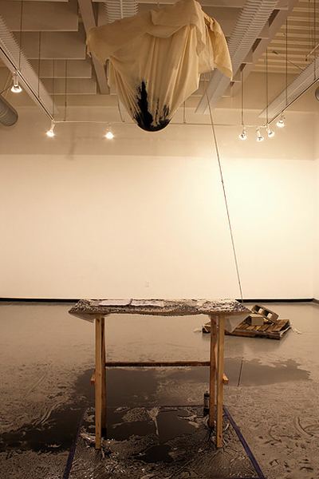
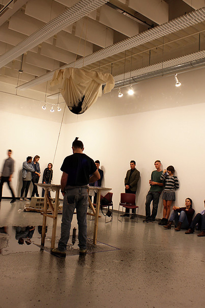

<section class="sculptureWork-sections m-scene"><div class="flex flex--center scene_element scene_element--fadein"><div id="wp-pushLeft" class="col-1b"><h4>Sculpture</h4><a href="vWork-ribOfAdam.html" class="wp-nextBtn">></a></div><div id="wp-pushLeft" class="col-1c"><h2>Survey - A Triptych</h2><h3 class="subTitle">Involuntary Response</h3><p class="workDate smaller">2014</p></div><div id="wp-pushLeft" class="col-toggleWorks"><a href="sWork-Survey.html" class="toggleWorks1">I</a><a id="active" href="sWork-Survey2.html" class="toggleWorks2">II</a><a href="sWork-Survey3.html" class="toggleWorks3">III</a></div><div id="wp-pushLeft" class="col-description"><p class="smaller">Approximately 216" x 120" x 120"</p><p class="smaller">Binder, Cinderblock, Happiness Surveys, Linen, MDF board, Metal Hooks, Page Protectors, Screws, Tempura Paint, Water, Wood</p><a href="sWork-Survey.html" class="portfolio-prevBtn"><</a><a href="sWork-Survey3.html" class="portfolio-nextBtn push-left">></a></div><div id="centerB" class="sculptureGallery pushUp"><ul class="rslides"><li></li><li></li><li></li><li></li></ul></div></div></section>